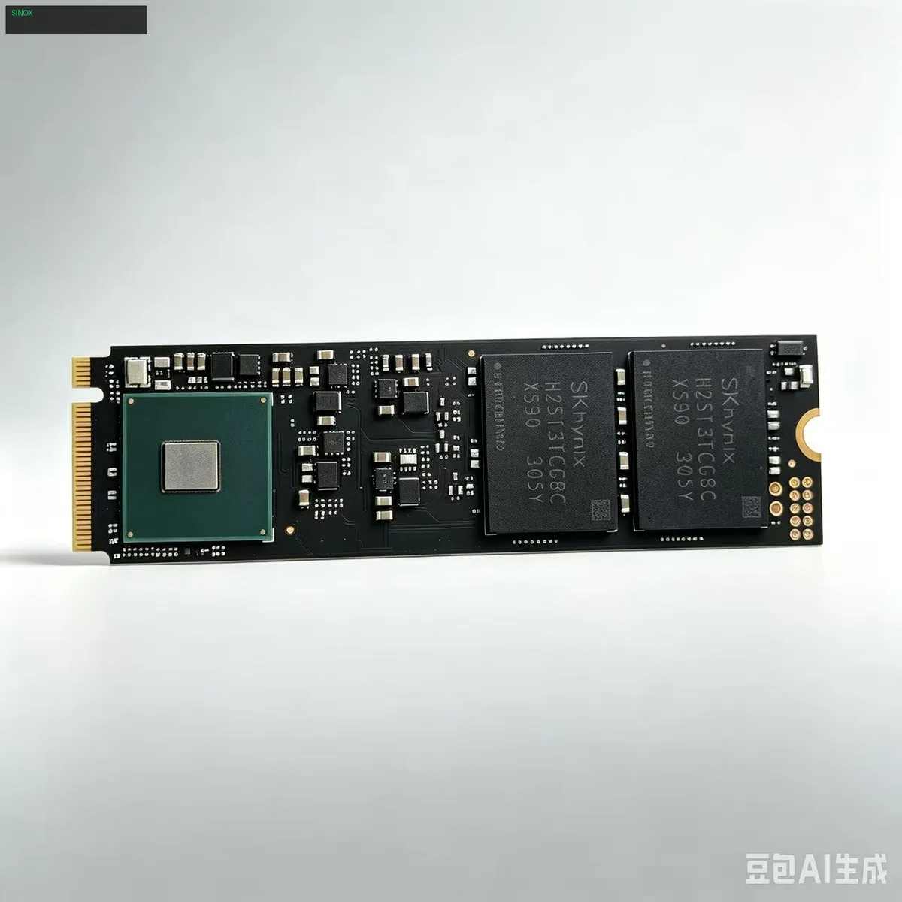
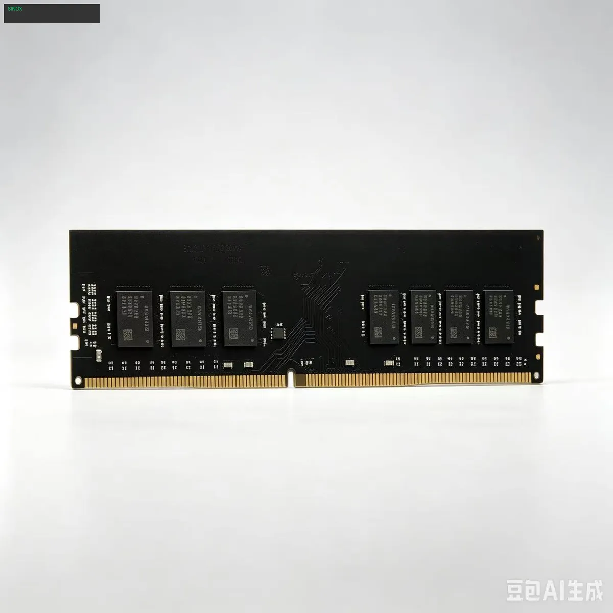
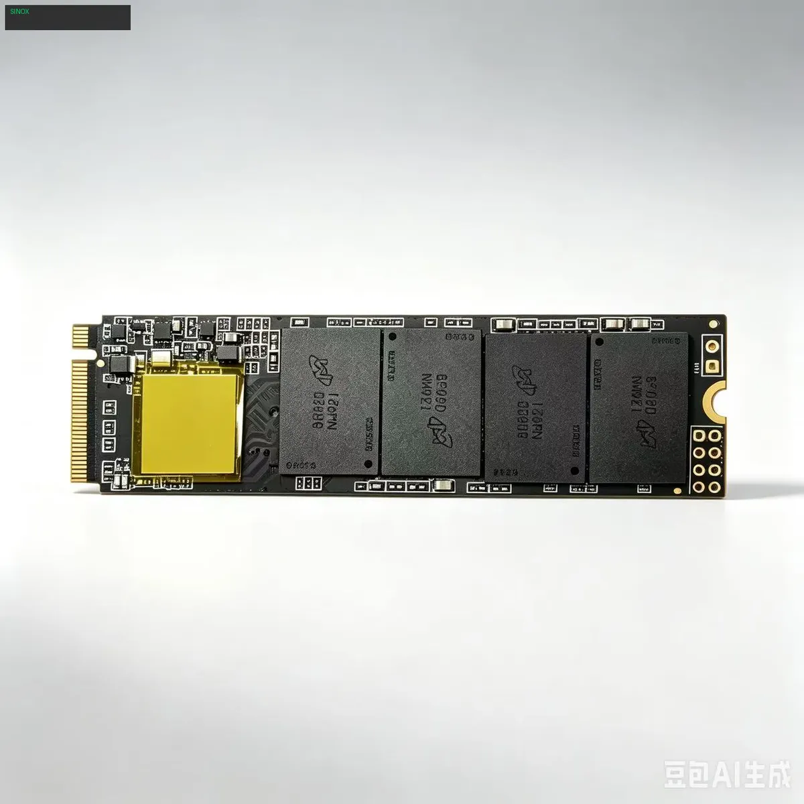
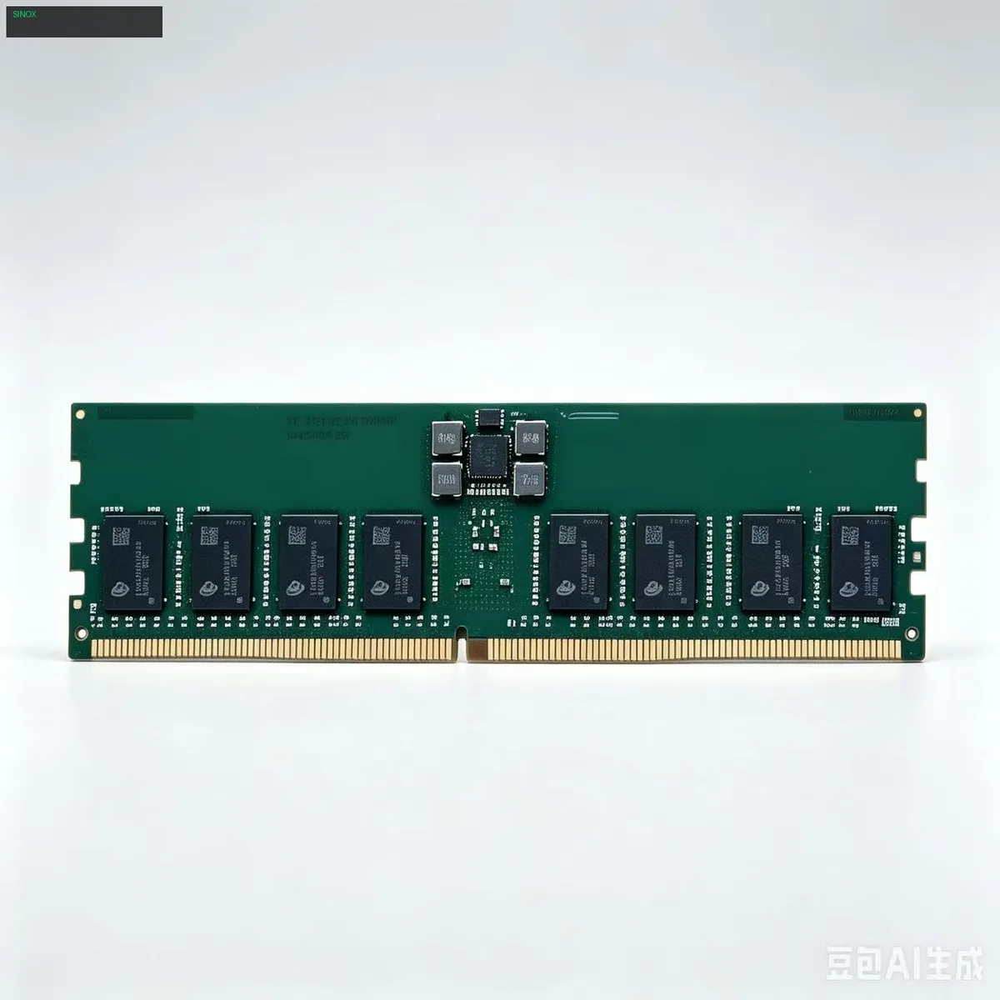

News

July 1, 2026 / 8 Comments
DDR4 Desktop Memory: The Ultimate Upgrade Guide for 2026
Upgrading your desktop with premium DDR4 memory modules ensures stable performance for gaming, content creation, and daily multitasking. Our comprehensive guide covers everything you need to know about choosing the right DDR4 RAM for your system, from frequency selection to dual-channel configuration.

June 28, 2026 / 15 Comments
NVMe PCIe 4.0 SSD: Why Speed Matters for Modern Computing
Discover how NVMe PCIe 4.0 SSDs with 7450MB/s read speeds transform gaming load times and professional workflows. Compare PCIe 3.0 vs 4.0 performance and learn why upgrading your storage is the most impactful PC upgrade you can make.

June 25, 2026 / 21 Comments
DDR5 5600MHz: Next Generation Memory Technology Explained
Learn why DDR5 memory with 5600MHz frequency represents the next big leap for desktop computing. From doubled bandwidth to improved power efficiency, DDR5 brings transformative benefits to gaming rigs and professional workstations alike.

June 20, 2026 / 12 Comments
SATA 2.5" SSD: The Reliable Storage Solution for Every PC
SATA SSDs remain the most versatile storage upgrade option. Compatible with virtually every desktop and laptop, these drives offer a perfect balance of capacity, reliability, and affordability for users upgrading from traditional hard drives.

June 15, 2026 / 9 Comments
2TB NVMe SSD: Store Your Entire Game Library on One Drive
Running out of storage space for modern AAA games? A 2TB NVMe SSD solves this problem permanently. With read speeds exceeding 7000MB/s, game loading screens become a thing of the past while you enjoy massive storage headroom.

June 10, 2026 / 16 Comments
DDR5 Server Memory: Enterprise-Grade Reliability from SINOX
For data centers and enterprise applications, SINOX DDR5 server memory delivers unmatched reliability with ECC error correction. Built for 24/7 operation, our server-grade modules meet the demanding requirements of modern cloud infrastructure.